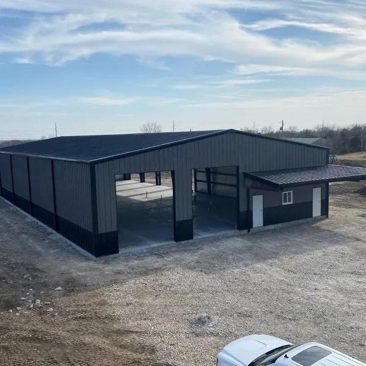
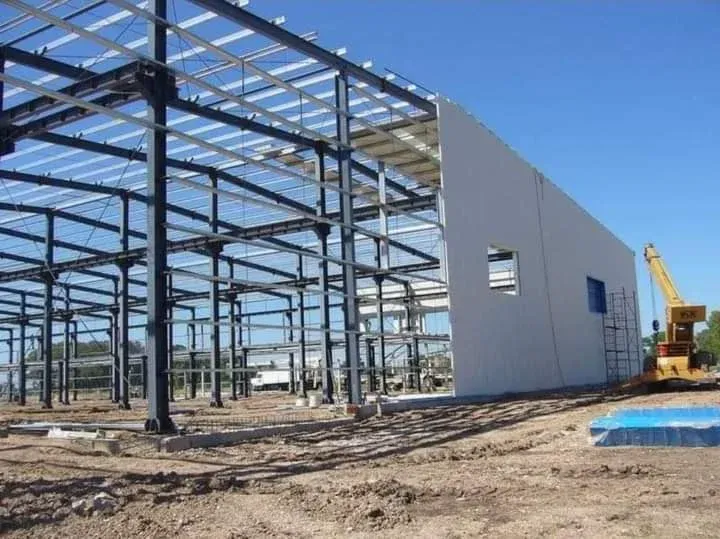

مساحة إنشائية تبدأ من حساب الحمل، لا من المتر المربع
قبل الحديث عن مساحة الهنجر بالمتر المربع، نسأل عن الاستخدام: تخزين خفيف، أم معدات ثقيلة ورافعات، أم ورشة تصنيع بحركة عمال يومية؟ الإجابة تحدد سماكة الأعمدة، نوع القواعد، وارتفاع السقف قبل أن نبدأ أي رسم هندسي. هذا الترتيب في التفكير هو ما يمنع مفاجآت التكلفة لاحقًا في منتصف التنفيذ.
الأنواع التي ننفذها
هناجر صناعية
هياكل فولاذية بامتداد واسع لورش التصنيع والتجميع، مصممة لتحمّل معدات ورافعات ثقيلة.

هناجر ومستودعات تجارية
مساحات تخزين منظمة للبضائع، بارتفاع سقف وعرض أبواب يناسب حركة الشاحنات والرافعات الشوكية.

هناجر زراعية
تغطية مساحات تخزين المحاصيل والأعلاف، مع تهوية مدروسة لمنع تراكم الرطوبة داخل الهنجر.
التصميم الهندسي المسبق
نموذج ثلاثي الأبعاد لحساب الأحمال الإنشائية وتوزيع الأعمدة قبل بدء أي تصنيع في الورشة.
استخدامات الهناجر والمستودعات
- المخازن التجارية: تخزين منظم للبضائع بحركة دخول وخروج سلسة.
- الورش والمصانع: مساحات إنتاج وتجميع تتحمل معدات ثقيلة.
- المزارع: تخزين الأعلاف والمحاصيل وإيواء المعدات الزراعية.
- مواقف المركبات والمعدات: تغطية كاملة للمعدات الثقيلة والشاحنات.



عوامل تحديد السعر
| العامل | أثره على السعر |
|---|---|
| مساحة وارتفاع الهنجر | يحدد كمية الحديد والقواعد الخرسانية المطلوبة |
| نوع الأحمال المتوقعة (تخزين خفيف أو معدات ثقيلة) | يحدد سماكة الأعمدة والكمرات الإنشائية |
| نوع التغطية (ألواح معدنية عادية أو معزولة) | العزل الحراري يرفع التكلفة لكنه يقلل تكييف الهواء لاحقًا |
| عدد وحجم الأبواب والفتحات | الأبواب الكبيرة الآلية أعلى تكلفة من الأبواب اليدوية البسيطة |
صيانة الهناجر والمستودعات
المنشأة الكبيرة تحتاج جدول صيانة منتظم لا يقل أهمية عن جودة التصنيع الأولى:
- فحص دوري لوصلات اللحام والبراغي الإنشائية في الهيكل الفولاذي.
- إعادة الدهان الحراري لأي منطقة تظهر عليها علامات صدأ مبكرة.
- تنظيف مجاري تصريف مياه الأمطار على السقف قبل موسم الشتاء.
- فحص الأبواب الكبيرة وأنظمة الفتح للتأكد من سلاسة الحركة.
أسئلة يتكرر سؤالها
كم يستغرق إنشاء هنجر متوسط المساحة؟
من أسابيع إلى شهرين تقريبًا حسب المساحة وتعقيد التصميم، بدءًا من اعتماد المخططات وحتى التسليم النهائي.
هل الهيكل الفولاذي يحتاج ترخيصًا خاصًا؟
نعم، ونساعدك في تجهيز المخططات اللازمة للحصول على التراخيص من الجهات المختصة قبل البدء بالتنفيذ.
هل يمكن إضافة عزل حراري لهنجر قائم بالفعل؟
في أغلب الحالات نعم، عبر إضافة ألواح عازلة على الهيكل الخارجي أو من الداخل حسب طبيعة الاستخدام.
ما الفرق بين الهنجر والمستودع في التسمية؟
غالبًا يُستخدم مصطلح الهنجر للمساحات المفتوحة الكبيرة، والمستودع للمساحات المخصصة للتخزين المنظم، وقد يتداخل الاستخدام حسب طبيعة المشروع.